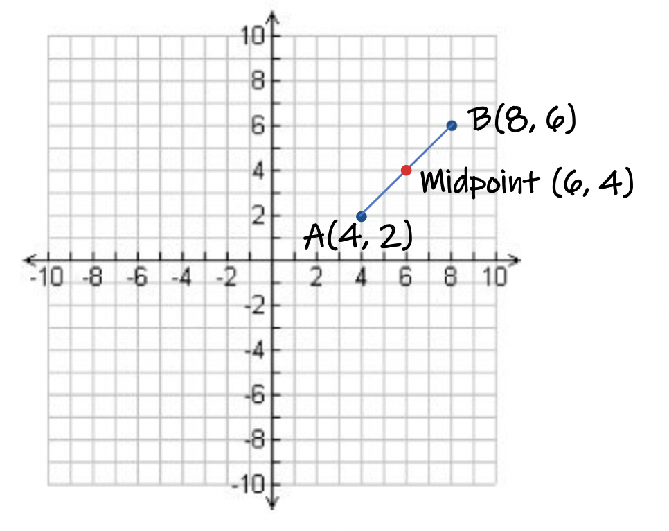
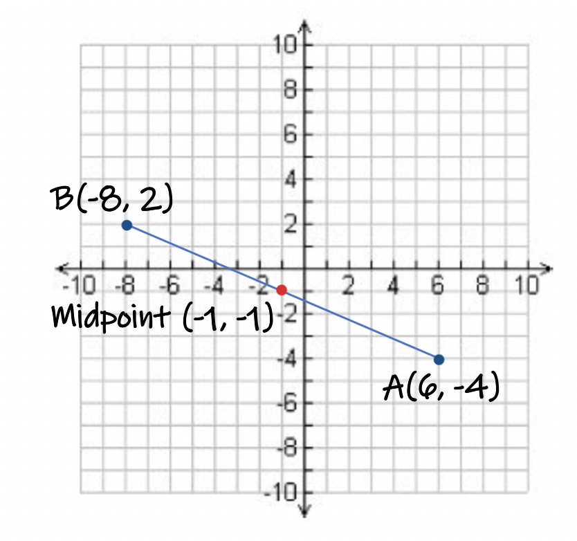
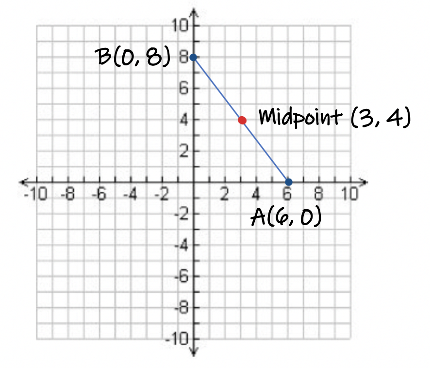

The Midpoint Formula is used to locate the exact middle
between two objects, or two locations.
It is typically implemented when it's the easiest to use:
when you have images that are sketched
on a grid or coordinate plane.
This is because there are
units of length created when we superimpose an image on
a grid and it makes calculations such as length very simple to make.
To locate a point (x, y) at the exact middle of a segment on a coordinate plane, average
each pair of corresponding coordinates to calculate the midpoint's location at: (xm, ym)
where m = "midpoint".
Additional Explanations:
If you recall in math, calculating the average of two numbers will give you
the number in the middle of your two values.
For an everyday example, if you got an 80% on a test and a 100% on a second
test, the teacher will typically average the two scores and give you an overall grade
equal to that amount. This is the programming used behind the Gradebook Technology
your teacher uses and the grades you earn in your classes.
So what would your new grade be after the two scores are averaged?
It would be a 90% A-! Awesome!
So what would your grade be if you were absent and missed the third test??
What would a zero being added into an 'Average' calculation do to your grade?
Let's investigate this. You would think it's just going to be the sum of your previous answer
with a new value of 0%.
Resulting in the following calculation, and resultant grade in the class:
90% + 0% = 90%
90% ÷ 2 = 45% F
Ouch! That's not good.
So missing one test, can take your grade from a 90% A- to 45% F!!!
Is this the same answer we would get if we started back at the beginning of the problem
and considered the entire problem as a whole? Including all three test scores at once?
Well, let's investigate:
80%, 100%, and a 0% are the three test scores.
The "Laws of Averaging" state: To calculate the average of more than two numbers,
you must divide the sum of your numbers by how many numbers you sum.
So in this instance, we have three test scores. Therefore, we will divide the
sum of the scores by 3.
80% + 100% + 0% = 180%
180% ÷ 3 = 60% D- hmmmm
Why are we getting two different answers? Personally i'd like get the second grade if it were me...
60%! Atleast I'd still be passing.... 😅
Long story short, its because PEMDAS comes into play due to multiple operations
(adding and dividing) being present in the same calculation.
A rule that applies to fractions and PEMDAS is:
Always combine the numerator values into one term BEFORE dividing that total by the denominator.
Let's look at some examples:
Example 1:
Locate the Midpoint of the segment formed by point A at (4, 2) and point B at (8, 6).
Solution: The midpoint formula tells us to average the 2 x-coordinates and average the two y-coordinates to get the midpoint's location.
Averaging the x-coordinates gives us (4 + 8) ÷ 2. Or 12 ÷ 2 = 6.
Averaging the two y-coordinates gives us (2 + 6) ÷ 2 . Or 8 ÷ 2 = 4.
The x-coordinate of the midpoint is at 6 and the y-coordinate is 4. As an ordered pair, we would write this as M = (6, 4) where M = midpoint.
Let's look at the graph of our three points and see if it looks correct.

As you can see, the midpoint, represented by the red dot, is at the middle of the segment. So our answer is correct.
Example 2:
Locate the Midpoint of the segment formed by point A at (6, -4) and point B at (-8, 2).
Solution: Averaging the 2 x-coordinates we get (6 + -8) ÷ 2 ➾ -2 ÷ 2 = -1.
The x-coordinate of the midpoint is -1.
Averaging the two y-coordinates gives us (-4 + 2) ÷ 2 ➾ -2 ÷ 2 = -1.
The y-coordinate of the midpoint is -1.
Therefore the midpoint of the segment is at (-1, -1).
Let's look at the image on a graph to check our answer.

Again we see that the midpoint is in the middle of the graphed segment AB.
Example 3:
Locate the midpoint of the segment AB with endpoints A(6, 0) and B(0, 8).
Solution:
Average the x-coordinates: (6 + 0) ÷ 2 ➾ 6 ÷ 2 = 3.
Average the y-coordinates: (0 + 8) ÷ 2 ➾ 8 ÷ 2 = 4.
The midpoint is at (3, 4). Again, we will check our answer by graphing:

Although it is not necessary to graph your answer, it is a good way to check your solution. If the midpoint isn't in the middle of the segment, you will want to re-calculate your answers.